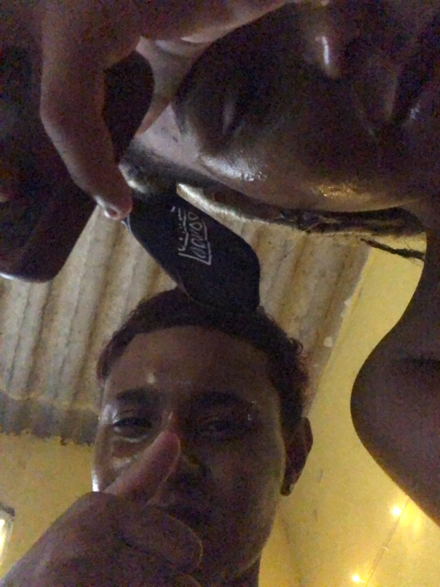

Minha Preta Rara 💋
Você é o verso mais bonito que o amor já escreveu em mim.
Desde que te encontrei, tudo ganhou cor, ritmo e razão. Meu coração dança no compasso do teu sorriso.
Te amar é viver num sonho que nunca quero acordar. É sentir o tempo parar toda vez que te vejo.
Em cada olhar seu, encontro um universo inteiro de paz e carinho. Sua presença acalma o que o mundo agita dentro de mim.

Seu amor é como o pôr do sol mais bonito — quente, suave e eterno. É nele que encontro o brilho que ilumina minha alma.
Te Amo ❤️
Pra sempre nós dois 💍